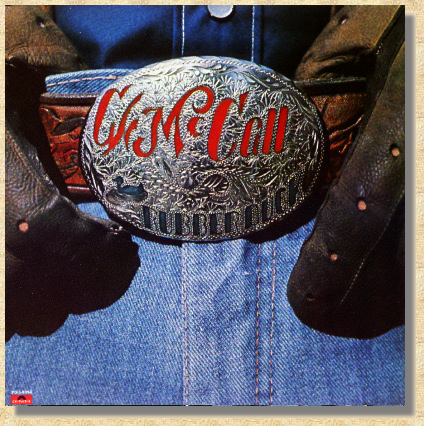

|
 Rubber Duck Heads 'Round The World With The Rubber Duck Audubon Super Slab Showdown Windshield Wipers In The Rain Sing Silent Night Tails Ratchetjaw Nishnabotna Two-Way Lovin' Camp Bird Mine Niobrara |
|
Produced by Don Sears, Chip Davis Arranged by Chip Davis Al Songs Written by C. W. McCall, Bill Fries, Chip Davis Engineered by Don Sears, John Boyd, Ron Ubel Recorded & Mastered at Sound Recorders, Inc., Omaha, Nebraska and Kansas City, Missouri Published by American Gramaphone SESAC |
|
DRUMS: Bill Berg, Chip Davis, Don Simmons, Terry Wadell KEYBOARDS: Joan Allen, Jackson Berkey BASS: Eric Hansen, Jimmy Johnson, Chuck Sanders TWELVE STRING: Ron Cooley, Ron Steele ELECTRIC GUITAR: Ron Cooley, Larry Morton, Ron Steele STEEL GUITAR: Stu Basore / BANJO: Bobbie Thomas HARMONICA: Eric Hansen / INDIAN WHITLE: Chip Davis STRINGS: Mortimer Alpert, Irene Berudt, Myrtle Bowman, Dorothy Brown, Hugh Brown, Miriam Dufflemeyer, Jinni Eldred, Lucinda Gladics, James Hammond, Joe Landes, Beth McCollum, Barbara Potter, Merton Shatzkin, Alex Sokol, Phillip Wachowski VOCALS: Milt Bailey, Christopher Cable, Chip Davis, Mike Hirsch, Ruth Horn, Gary Morris, Mel Olsen, Jan Sheldrick Jerry Smithers, Dick Solowicz, Sarah Westphalen Album Design by Bill Fries, Don Sears / Photography by Don Sears (c) (P) 1976 Polydor Incorporated / Also available on 8-Track (8T-1-6094) and cassette (CT-1-6094) Manufactured and Distributed by Polydor Incorporated 810 Seventh Avenue, New Yor, N.Y. 10019, Printed in U.S.A. |

This Web page is hosted by: Mark L. Evans
Written and maintained by: Miles A. Lumbard
Send Comments to:Miles A. Lumbard